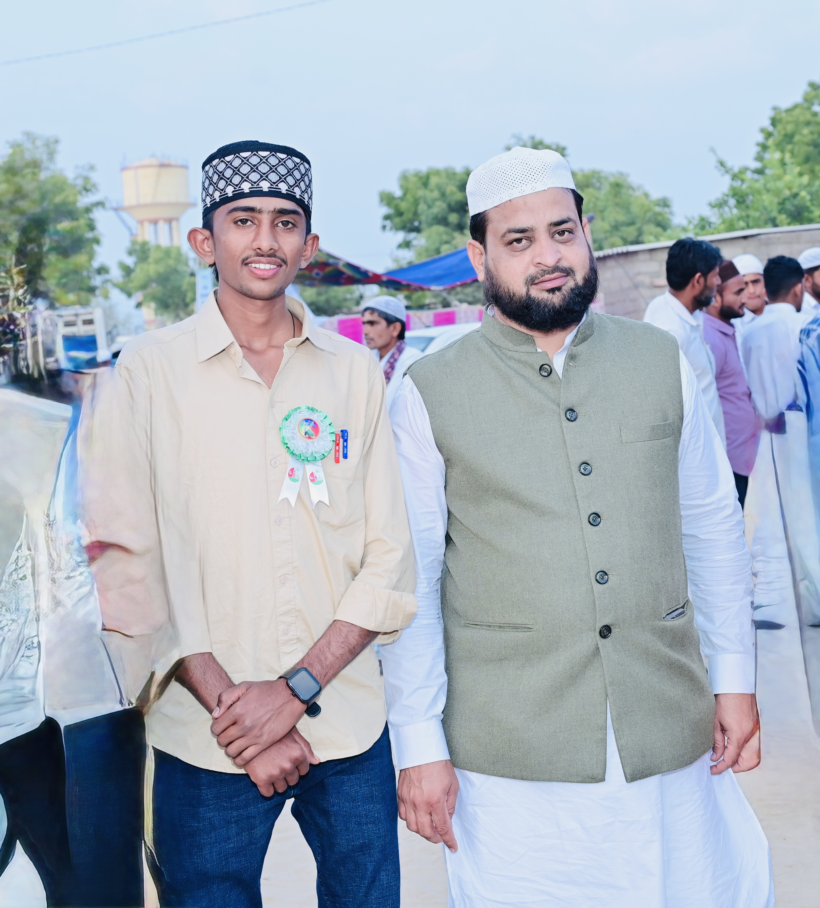

2026
Bachelor of Arts (B.A.)
Darshan College, Barmer
Completed
MAIN PROFILE
SAKUR KHAN MASSA
Teacher • Digital Creator • Learner
Welcome to my personal website. Here you can explore my education, teaching experience, digital skills, interests and professional journey.
01 / ABOUT
I am Sakur Khan Massa, known as SM MARWAR. This website represents my personal profile, background, education, experience and interests.
I am continuing my journey toward becoming a government teacher through B.Ed. education, while also developing digital, creative and communication skills.
02 / EDUCATION
Darshan College, Barmer
CompletedSubodh B.Ed. College, Sikar · First Year
Currently StudyingDiploma in Computer & Information Technology
Completed03 / EXPERIENCE
2 years of teaching experience with practical classroom and student-learning exposure.
Experience working with eMitra services and digital public-service related work.
Video editing, content creation and creative digital media work.
04 / SKILLS & INTERESTS
RSCIT, computer skills, web, social media and modern digital tools.
I can read Qur'an Sharif and Islamic books, with an interest in Islamic learning.
Video editing, content creation, photography and visual creativity.
Education is currently continuing through B.Ed. preparation to build a career as a government teacher.
05 / RUHANI REHNUMAI
Deen aur ruhani zindagi mein rehnumai, adab aur achhi taleem meri personal journey ka ek hissa hai.
Apne Peer/Murshid ke liye aqeedat aur ehtram ko ek saadah, ba-waqar aur adab ke saath represent kiya gaya hai.
06 / GALLERY
Explore moments, memories and experiences.
Loading photos…
08 / CONTACT
For enquiries, collaboration or a professional connection, feel free to get in touch.
07 / CONNECT
Social Presence.